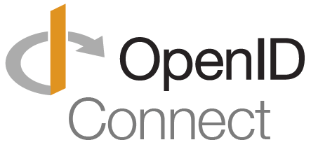

Created by Chris Park, last modified on Dec 25, 2024
This documentation describes OpenID Connect (OIDC), an identity authentication protocol that extends OAuth 2.0, and explains how it is used in our LTI integration.
Contents
1. What is Open ID Connect(OIDC)?
OIDC is an extended protocol that adds user authentication functionality to OAuth 2.0, which focuses on authorization. This allows the resource owner to confirm not only the authorization of the client but also the authentication of the user. So, each platforms can share its information in more secure way.
For example, our DLX server stores client and platform information, such as “first name”, “last name”, “platform id“ and “client id”, in the local database after validating the ID token. Additionally, the ltik token, which is a JWT access token, includes the “client id” to help the server track the user's accessibility.
 Data set for storing the client information in the local database
Data set for storing the client information in the local database
const platformToken = {
iss: valid.iss,
user: valid.sub,
userInfo: {
given_name: valid.given_name,
family_name: valid.family_name,
name: valid.name,
email: valid.email
},
platformInfo: valid['https://purl.imsglobal.org/spec/lti/claim/tool_platform'],
clientId: valid.clientId,
platformId: valid.platformId,
deploymentId: valid['https://purl.imsglobal.org/spec/lti/claim/deployment_id']
};
Sample 'ltik' JWT access token {
"platformUrl": "https://vconestoga.duckdns.org ",
"clientId": "bgo9eFCTs1dSK68",
"deploymentId": "252",
"platformCode": "ltiaHR0cHM6Ly92Y29uZXN0b2dhLmR1Y2tkbnMub3JnYmdvOWVGQ1RzMWRTSzY4MjUy",
"contextId": "https%3A%2F%2Fvconestoga.duckdns.orgbgo9eFCTs1dSK682528_156",
"user": "22",
"s": "e23295480fb02f7998611f51a35760b1db4c4967c102458b35",
"iat": 1734728654
}
2. Key Components of OIDC
| OIDC Components | LTI Components |
|---|
| 1 | Client | A student’s web browser |
| 2 | Relying Party | DLX Server |
| 3 | Resource Server | DLX Server |
| 4 | Identity token | id_token |
| 5 | OpenID Provider | eConestoga |
| 6 | Users | Students |
“A student’s web browser” is our ‘Client,’ which requests tokens to authenticate a user and access the DLX simulation on eConestoga.
‘DLX Server’ is the “Relying Party” and also “Resource Server“ that uses an OpenID provider to authenticate users and veerify the access token and provide the resource to users.
The ‘id_token’ is an “Identity token” that contains identity data, including the outcome of the authentication process, an identifier for the user, and information about how and when the user was authenticated.
“eConestoga” is the “OpenID Provider,” an application where a user already has an account. Its role in OIDC is to authenticate the user and pass that information to the relying party.
‘Students’ are 'Users' who seek to access an application without creating a new account or providing a username and password.
3. How Does OIDC Authentication Work?
: Normally, OIDC authentication is used to allow users to sign in to one application and gain access to another application that already has their information.
However, the situation is slightly different in the LTI authentication flow. In this case, a user (student) is already logged in to eConestoga and wants to access a specific DLX simulation build stored on the DLX server.
Although the students are already authenticated by eConestoga, the DLX server does not have their identification. Therefore, the server requires an authentication process to verify the students' identity, which is a which is achieved through the OIDC authentication workflow!
The key component of the OIDC authentication workflow is the 'ID Token.' This token is exchanged between the OpenID Provider (eConestoga) and the Relying Party (DLX Server). It contains critical information about the client and each platform involved.
Sample Decrypted id_token from Moodle {
"nonce": "u4lpru6oelf9ppzlzyuh3f8w2",
"iat": 1732034619,
"exp": 1732034679,
"iss": "https://vconestoga.duckdns.org ",
"aud": "2wyNZyDP9PoG3YW",
"https://purl.imsglobal.org/spec/lti/claim/deployment_id": "364",
"https://purl.imsglobal.org/spec/lti/claim/target_link_uri": "https://6483-72-138-14-22.ngrok-free.app/dlx/rab",
"sub": "22",
"https://purl.imsglobal.org/spec/lti/claim/lis": {
"person_sourcedid": "",
"course_section_sourcedid": ""
},
"https://purl.imsglobal.org/spec/lti/claim/roles": [
"http://purl.imsglobal.org/vocab/lis/v2/institution/person#Administrator",
"http://purl.imsglobal.org/vocab/lis/v2/membership#Instructor",
"http://purl.imsglobal.org/vocab/lis/v2/system/person#Administrator"
],
"https://purl.imsglobal.org/spec/lti/claim/context": {
"id": "12",
"label": "test_course",
"title": "test_course",
"type": [
"CourseSection"
]
},
"https://purl.imsglobal.org/spec/lti/claim/resource_link": {
"title": "rab",
"id": "230"
},
"given_name": "Chris",
"family_name": "Park",
"name": "Chris Park",
"https://purl.imsglobal.org/spec/lti/claim/ext": {
"user_username": "chrisp",
"lms": "moodle-2"
},
"email": "cpark@conestogac.on.ca",
"https://purl.imsglobal.org/spec/lti/claim/launch_presentation": {
"locale": "en",
"document_target": "iframe",
"return_url": "https://vconestoga.duckdns.org/mod/lti/return.php?course=12&launch_container=3&instanceid=230&sesskey=GnZb6BBSVz"
},
"https://purl.imsglobal.org/spec/lti/claim/tool_platform": {
"product_family_code": "moodle",
"version": "2020110900.06",
"guid": "03e704ce4a11bd391c8d1f2bc7c485ac",
"name": "TestSSO",
"description": "vConestoga LMS"
},
"https://purl.imsglobal.org/spec/lti/claim/version": "1.3.0",
"https://purl.imsglobal.org/spec/lti/claim/message_type": "LtiResourceLinkRequest",
"https://purl.imsglobal.org/spec/lti-ags/claim/endpoint": {
"scope": [
"https://purl.imsglobal.org/spec/lti-ags/scope/lineitem",
"https://purl.imsglobal.org/spec/lti-ags/scope/lineitem.readonly",
"https://purl.imsglobal.org/spec/lti-ags/scope/result.readonly",
"https://purl.imsglobal.org/spec/lti-ags/scope/score"
],
"lineitems": "https://vconestoga.duckdns.org/mod/lti/services.php/12/lineitems?type_id=364"
},
"https://purl.imsglobal.org/spec/lti-nrps/claim/namesroleservice": {
"context_memberships_url": "https://vconestoga.duckdns.org/mod/lti/services.php/CourseSection/12/bindings/364/memberships",
"service_versions": [
"1.0",
"2.0"
]
}
}
“
Sample Original id_token from Moodle "id_token": "eyJ0eXAiOiJKV1QiLCJhbGciOiJSUzI1NiIsImtpZCI6IjM4MzUzNjJiODQwNTcyYTM2ODBhIn0.eyJub25jZSI6InU0bHBydTZvZWxmOXBwemx6eXVoM2Y4dzIiLCJpYXQiOjE3MzIwMzQ2MTksImV4cCI6MTczMjAzNDY3OSwiaXNzIjoiaHR0cHM6XC9cL3Zjb25lc3RvZ2EuZHVja2Rucy5vcmciLCJhdWQiOiIyd3lOWnlEUDlQb0czWVciLCJodHRwczpcL1wvcHVybC5pbXNnbG9iYWwub3JnXC9zcGVjXC9sdGlcL2NsYWltXC9kZXBsb3ltZW50X2lkIjoiMzY0IiwiaHR0cHM6XC9cL3B1cmwuaW1zZ2xvYmFsLm9yZ1wvc3BlY1wvbHRpXC9jbGFpbVwvdGFyZ2V0X2xpbmtfdXJpIjoiaHR0cHM6XC9cLzY0ODMtNzItMTM4LTE0LTIyLm5ncm9rLWZyZWUuYXBwXC9kbHhcL3JhYiIsInN1YiI6IjIyIiwiaHR0cHM6XC9cL3B1cmwuaW1zZ2xvYmFsLm9yZ1wvc3BlY1wvbHRpXC9jbGFpbVwvbGlzIjp7InBlcnNvbl9zb3VyY2VkaWQiOiIiLCJjb3Vyc2Vfc2VjdGlvbl9zb3VyY2VkaWQiOiIifSwiaHR0cHM6XC9cL3B1cmwuaW1zZ2xvYmFsLm9yZ1wvc3BlY1wvbHRpXC9jbGFpbVwvcm9sZXMiOlsiaHR0cDpcL1wvcHVybC5pbXNnbG9iYWwub3JnXC92b2NhYlwvbGlzXC92MlwvaW5zdGl0dXRpb25cL3BlcnNvbiNBZG1pbmlzdHJhdG9yIiwiaHR0cDpcL1wvcHVybC5pbXNnbG9iYWwub3JnXC92b2NhYlwvbGlzXC92MlwvbWVtYmVyc2hpcCNJbnN0cnVjdG9yIiwiaHR0cDpcL1wvcHVybC5pbXNnbG9iYWwub3JnXC92b2NhYlwvbGlzXC92Mlwvc3lzdGVtXC9wZXJzb24jQWRtaW5pc3RyYXRvciJdLCJodHRwczpcL1wvcHVybC5pbXNnbG9iYWwub3JnXC9zcGVjXC9sdGlcL2NsYWltXC9jb250ZXh0Ijp7ImlkIjoiMTIiLCJsYWJlbCI6InRlc3RfY291cnNlIiwidGl0bGUiOiJ0ZXN0X2NvdXJzZSIsInR5cGUiOlsiQ291cnNlU2VjdGlvbiJdfSwiaHR0cHM6XC9cL3B1cmwuaW1zZ2xvYmFsLm9yZ1wvc3BlY1wvbHRpXC9jbGFpbVwvcmVzb3VyY2VfbGluayI6eyJ0aXRsZSI6InJhYiIsImlkIjoiMjMwIn0sImdpdmVuX25hbWUiOiJDaHJpcyIsImZhbWlseV9uYW1lIjoiUGFyayIsIm5hbWUiOiJDaHJpcyBQYXJrIiwiaHR0cHM6XC9cL3B1cmwuaW1zZ2xvYmFsLm9yZ1wvc3BlY1wvbHRpXC9jbGFpbVwvZXh0Ijp7InVzZXJfdXNlcm5hbWUiOiJjaHJpc3AiLCJsbXMiOiJtb29kbGUtMiJ9LCJlbWFpbCI6ImNwYXJrQGNvbmVzdG9nYWMub24uY2EiLCJodHRwczpcL1wvcHVybC5pbXNnbG9iYWwub3JnXC9zcGVjXC9sdGlcL2NsYWltXC9sYXVuY2hfcHJlc2VudGF0aW9uIjp7ImxvY2FsZSI6ImVuIiwiZG9jdW1lbnRfdGFyZ2V0IjoiaWZyYW1lIiwicmV0dXJuX3VybCI6Imh0dHBzOlwvXC92Y29uZXN0b2dhLmR1Y2tkbnMub3JnXC9tb2RcL2x0aVwvcmV0dXJuLnBocD9jb3Vyc2U9MTImbGF1bmNoX2NvbnRhaW5lcj0zJmluc3RhbmNlaWQ9MjMwJnNlc3NrZXk9R25aYjZCQlNWeiJ9LCJodHRwczpcL1wvcHVybC5pbXNnbG9iYWwub3JnXC9zcGVjXC9sdGlcL2NsYWltXC90b29sX3BsYXRmb3JtIjp7InByb2R1Y3RfZmFtaWx5X2NvZGUiOiJtb29kbGUiLCJ2ZXJzaW9uIjoiMjAyMDExMDkwMC4wNiIsImd1aWQiOiIwM2U3MDRjZTRhMTFiZDM5MWM4ZDFmMmJjN2M0ODVhYyIsIm5hbWUiOiJUZXN0U1NPIiwiZGVzY3JpcHRpb24iOiJ2Q29uZXN0b2dhIExNUyJ9LCJodHRwczpcL1wvcHVybC5pbXNnbG9iYWwub3JnXC9zcGVjXC9sdGlcL2NsYWltXC92ZXJzaW9uIjoiMS4zLjAiLCJodHRwczpcL1wvcHVybC5pbXNnbG9iYWwub3JnXC9zcGVjXC9sdGlcL2NsYWltXC9tZXNzYWdlX3R5cGUiOiJMdGlSZXNvdXJjZUxpbmtSZXF1ZXN0IiwiaHR0cHM6XC9cL3B1cmwuaW1zZ2xvYmFsLm9yZ1wvc3BlY1wvbHRpLWFnc1wvY2xhaW1cL2VuZHBvaW50Ijp7InNjb3BlIjpbImh0dHBzOlwvXC9wdXJsLmltc2dsb2JhbC5vcmdcL3NwZWNcL2x0aS1hZ3NcL3Njb3BlXC9saW5laXRlbSIsImh0dHBzOlwvXC9wdXJsLmltc2dsb2JhbC5vcmdcL3NwZWNcL2x0aS1hZ3NcL3Njb3BlXC9saW5laXRlbS5yZWFkb25seSIsImh0dHBzOlwvXC9wdXJsLmltc2dsb2JhbC5vcmdcL3NwZWNcL2x0aS1hZ3NcL3Njb3BlXC9yZXN1bHQucmVhZG9ubHkiLCJodHRwczpcL1wvcHVybC5pbXNnbG9iYWwub3JnXC9zcGVjXC9sdGktYWdzXC9zY29wZVwvc2NvcmUiXSwibGluZWl0ZW1zIjoiaHR0cHM6XC9cL3Zjb25lc3RvZ2EuZHVja2Rucy5vcmdcL21vZFwvbHRpXC9zZXJ2aWNlcy5waHBcLzEyXC9saW5laXRlbXM_dHlwZV9pZD0zNjQifSwiaHR0cHM6XC9cL3B1cmwuaW1zZ2xvYmFsLm9yZ1wvc3BlY1wvbHRpLW5ycHNcL2NsYWltXC9uYW1lc3JvbGVzZXJ2aWNlIjp7ImNvbnRleHRfbWVtYmVyc2hpcHNfdXJsIjoiaHR0cHM6XC9cL3Zjb25lc3RvZ2EuZHVja2Rucy5vcmdcL21vZFwvbHRpXC9zZXJ2aWNlcy5waHBcL0NvdXJzZVNlY3Rpb25cLzEyXC9iaW5kaW5nc1wvMzY0XC9tZW1iZXJzaGlwcyIsInNlcnZpY2VfdmVyc2lvbnMiOlsiMS4wIiwiMi4wIl19fQ.k5-CWRpFEQpHgRLGBr7o0NvFc_8YFtVGqpqnXAj1S6nzIGhjlnLxQk4bxJNCPHy6n-EZgvqn2a8fUWcEuaa7j2l5elQze0Mji-VM_Dad8aQSVRjjXbADdSPtclHLj_Swp3NjW3fTL4SzjyPbOUvRZKPnbZD6wvoY2QKXAQDZd_EL7nU6wLgcc6fnZz6QxAHMf-js27i4mlyaEctDaJ3wGPtcoyZOACbGXLSqikHF82qeZ98dhG0l55uegY2oJ1-O5RS9o1T8YUhFNr4IAcpknxm6SrXw83zOzwj1pGt3F_T36VZcFddHcGrkMW7aq50f83oTTnAw3P972SGVGbEyng"
This ID token is an ‘LTI Advantage Login ID token,’ and it is specific to the LTI integration. Therefore, it may not represent all ID tokens used in OIDC.
However, it still retains the main features of an OIDC ID token. 'Scope' is one of the most representative components of an ID token, defining the access permissions that users can use.
4. References
[Contents]
[Images]
{kind=link}
{kind=link}
{kind=link}
{kind=link}